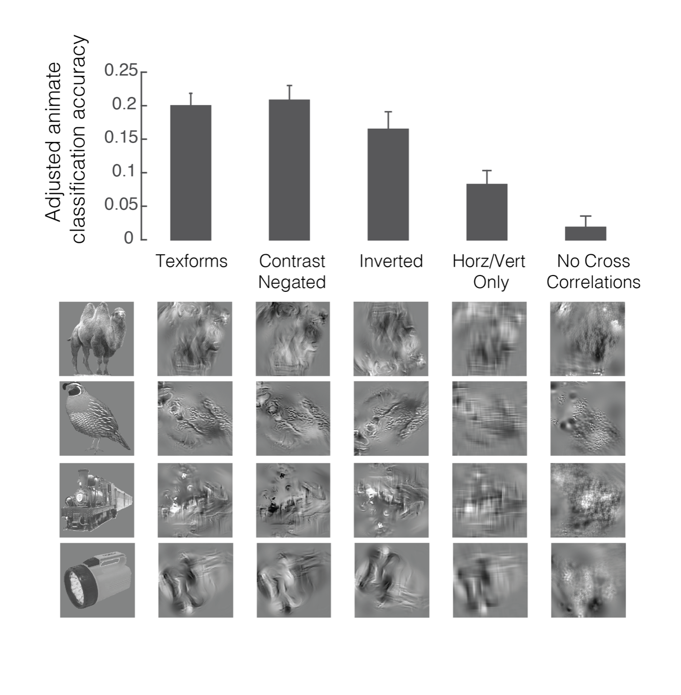

Texform FAQ
What texforms are, and how to make your own
What are texforms?
Texforms are a kind of synthetic stimuli that preserve some mid-level texture and coarse form information from original images, yet are unrecognizable at the basic-level (e.g., as a "cup"). I've found them to be a useful class of stimuli for my own work, and hopefully you can too. They're generated through two main steps: (1) iteratively coercing white noise to have the same image statistics as an original image within spatially defined windows (Freeman & Simoncelli, 2011) and then (2) making sure the resulting texforms are not recognizable at the basic-level.
Here's a link to the original code; below is a schematic of how they were generated. However, Arturo Deza has since led a project generating texforms using a more efficient method with a well-maintained codebase if you are interested in making your own (see GitHub repository).


OK, but what ARE the features preserved in the texforms?
There's a mathematical answer and an intuitive answer to that question. At a mathematical level, it's basically preserving V1-like responses from a Gabor wavelet model and their correlations across different scales, orientations, and position -- and it's preserving these features with the spatial pooling windows. This extra bit of spatial information is what makes texforms different from the original Portilla & Simoncelli (2000) model and resulting textures (see here for code and explanation).
But if you're a psychologist, that's probably not a very satisfying answer. At an intuitive gloss, they seem to preserve both the relevant curvature statistics (how curvy/boxy something looks) as well as basic texture information.
I've done some work exploring what these features are by examining how changing a texform changes how well you can tell whether it was generated from a picture of animal vs. an object.
When texforms are contrasted negated (see Figure) or inverted, people can still derive animacy information from them -- and this is predicted by how "curvy" vs "boxy" people rate these texforms. Accordingly, if you remove all "curvy" information from the images (and only retain horizontal and vertical spatial frequencies), then classification accuracy drops quite a bit for animals. And if you remove ALL of the cross-correlation statistics from the model -- effectively eliminating all of the relevant textural statistics -- you also decrease classification down to chance. For more details, you can read about these data in Experiment 4 of this paper or grab these stimuli from it's github repository. Of course, there's still a lot of work to be done here, admittedly, and a large library of intuitive "mid-level" features we could test.
Importantly, however, I think of texforms as one way to hack into the large "black box" of mid-level feature space -- they're just a way to try to understand the visual system, rather than an exact copy of mid-level representations.

Figure 5 from Long, Störmer, & Alvarez (2017)
(Upper panel) Adjusted animate classification accuracy for each of the five modified image sets. Zero reflects chance classification. Error bars reflect standard error of the mean over individual items. (Lower panel) Four example items from each image set.
So are your texforms "metamers" in the periphery?
We've never tested this, but I highly doubt it, given that they are generated as isolated objects on blank backgrounds. The original textures generated by this algorithm in Freeman & Simoncelli (2011) are all created from scenes or naturalistic textures -- not isolated objects.
Could I use a different texture synthesis algorithm to make texforms?
In principle, as long as the algorithm computes the image statistics over spatial information, yes. In practice, I've found that square pooling windows often don't produce texforms that have have spatially coherent "form" information -- but that's subjective and you should free to experiment! The code includes a way to use square pooling windows. However, Ruth Rosenholtz has some great, related work that you should definitely check out if you're interested in this topic (see FAQ on her "mongrel" model here).